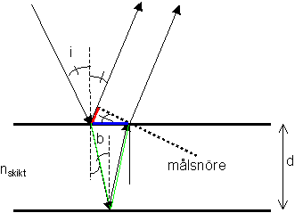
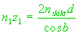
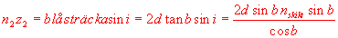
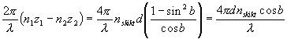
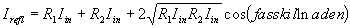
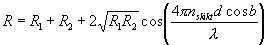

Härledning av fasskillnad i tunnt skikt

Vi låter infallande stråle komma från ett medium med brytningsindex 1, och med infallsvinkel i.
Vid första gränsytan reflekteras då en liten andel (några procent i allmännhet), med reflektionsvinkeln i. Huvuddelen fortsätter emellertid ner i skiktet, med brytningsvinkel b som ges av brytningslagen: sin(i) = n sin (b).
Vid andra gränsytan reflekteras ånyo en liten andel (huvuddelen går ner i underlaget=substratet, och blir där ointressant för oss) som går upp mot första ytan där dess huvuddel tranmitteras uppåt igen (den del som återigen reflekteras är liten och ointressant)
Fasskillanden mellan dessa bägge strålar innehåller n1z1-n2z2 som vi börjar med att beräkna:
 och 
vilket ger 
och fasskillnaden är klar
Om vi nu den reflekterade intensiteten

och dividerar med inkommande instensitet Iin fås

vilket ju är det sökta uttrycket.